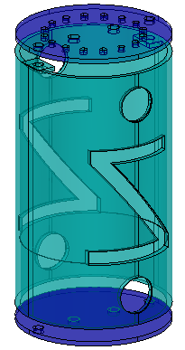
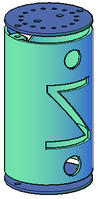
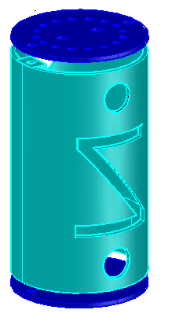
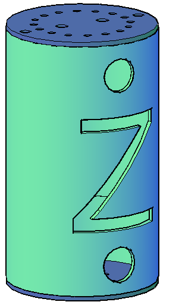
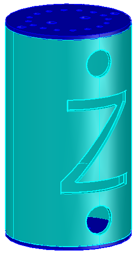
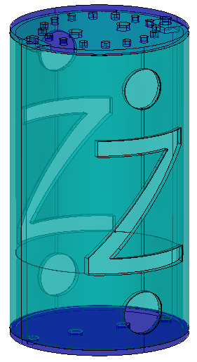
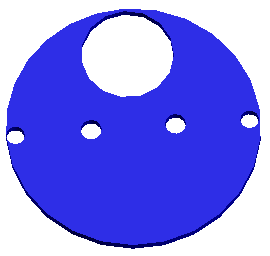

- 16 agujeros para poder atar bien las cuerdas del paracaídas.
- 2 agujeros a los laterales para los tornillos.
- 2 agujeros casi en el medio, uno para la antena y otro para el interruptor.
- 2 agujeros a los laterales para los tornillos.
- 2 agujeros casi en el medio, uno para la antena y otro para el interruptor.
- 2 agujeros a los laterales para los tornillos.
- 2 agujeros casi en el medio, uno para la antena y otro para el interruptor.
- 1 agujero casi en el lateral de la tapa, para la pila.
En los siguientes dibujos se pueden ver las diferentes formas de la lata.
      